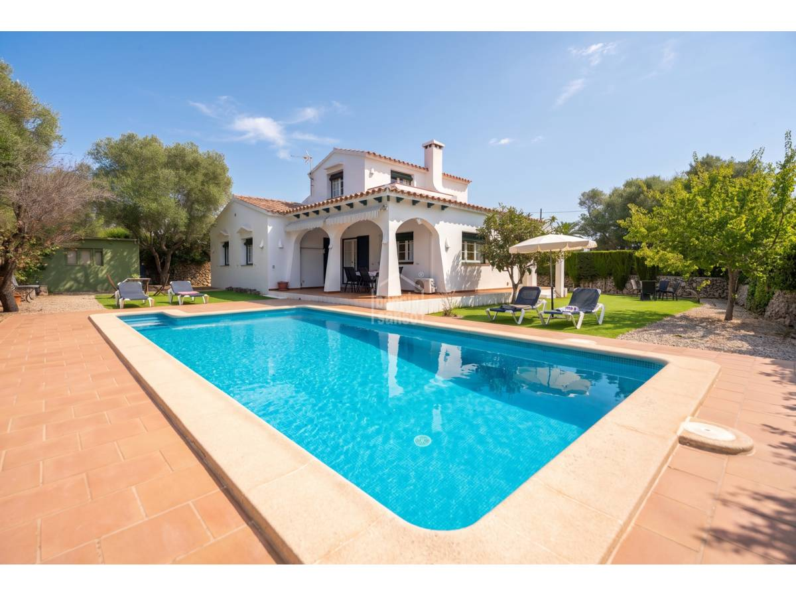

€690.000
Trebalúger, Es Castell, Menorca, Spain
Open the listingExact menorquina brief: white arched porch, terracotta roof and a generous built private pool on a private Trebalúger garden plot — under €700k. Distinct from board trebaluger-93361 (€597k / 157 m² / 479 m²), trebaluger-90158 (135/786) and trebaluger JE (215/830).
Opened 10 Sep 2026. Asking 690.000 €. Specs: 3/2 / 162 m² / 611 m² + Pool. Copy: peaceful Trebalúger residential; private garden and pleasant pool area. Hero confirms three-arch porch and built rectangular pool. Not a fixer.